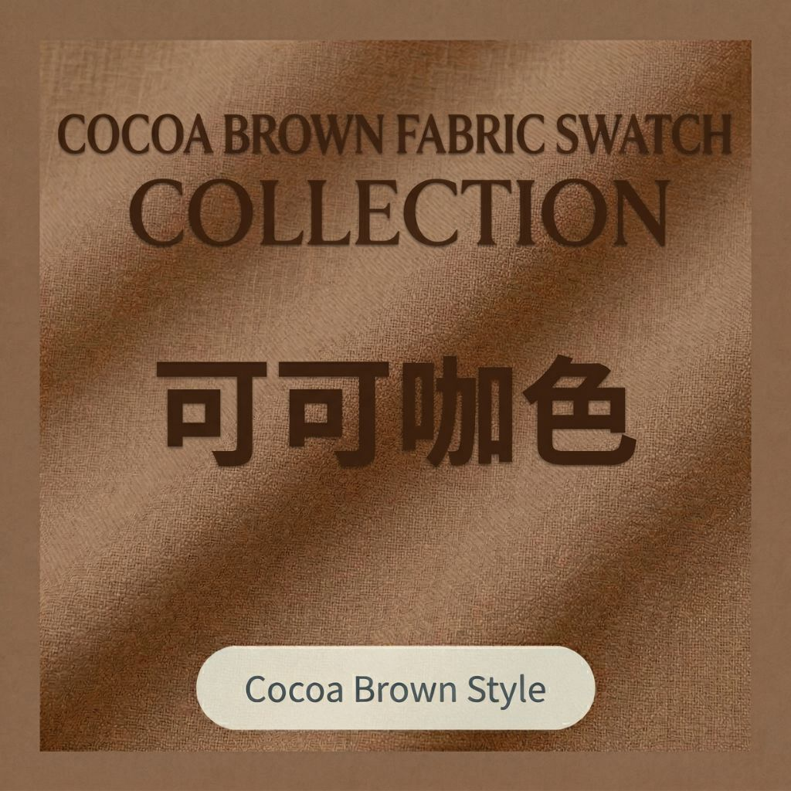
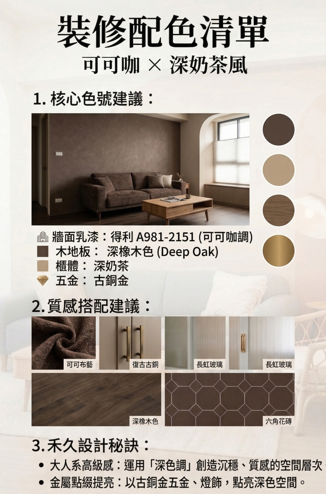
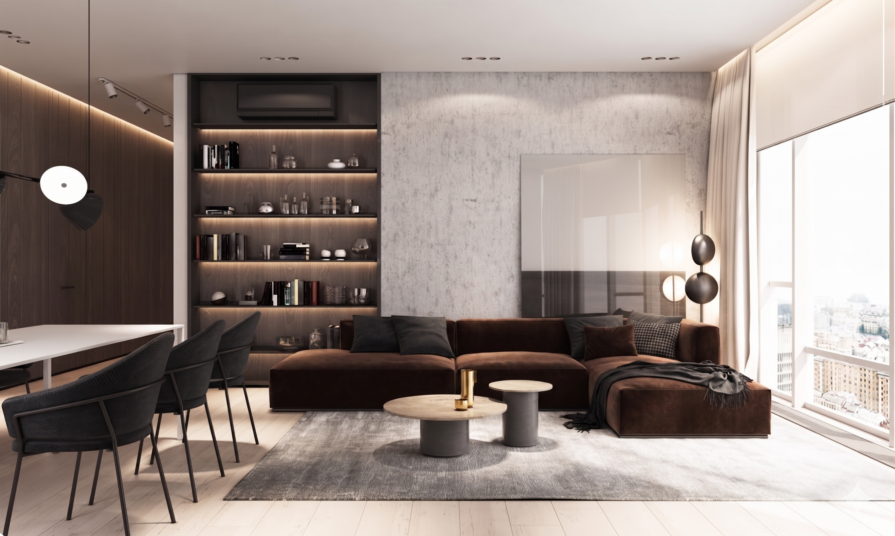
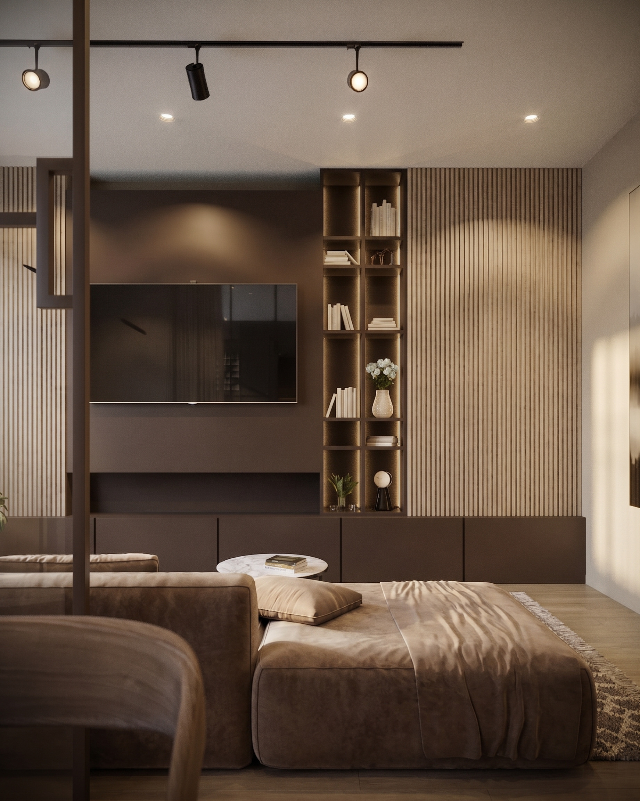
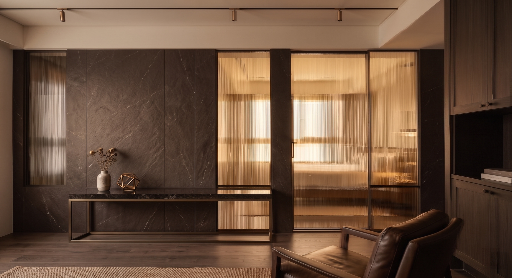

如果說奶茶風是溫柔的代名詞，那麼「可可咖（Cocoa Brown）」就是為追求質感、個性與安定感的屋主，量身打造的「大人系」標配。
這種配色能讓空間從視覺轉化為觸覺，讓人踏入家門的那一刻，迅速抽離城市的喧囂，找回內心的平靜。

❶ 沈穩色彩的視覺層次：關於「色彩的厚度」
深色調不代表壓迫，關鍵在於比例與厚度。我們選用 得利 A981-2151（可可咖） 作為基底，搭配深灰木質櫃體，創造出如精品飯店般的包覆感。牆面不再只是冰冷的邊界，而是情緒的緩衝墊，讓回家成為一種療癒。


❷ 提亮空間的關鍵：會呼吸的材質對話
為了消弭深色的厚重感，我們在材質細節上做了細膩的處理：
- 微紋理牆面： 搭配手感漆，讓牆面在不同角度的燈光下產生流動光影。
- 淺色系平衡： 地板選用淺橡木色，讓視覺層次由深至淺向上延伸，維持空間明亮度。
- 金屬邊框點綴： 將櫃體邊緣改用霧面黑鋁合金或古銅金細拉邊，瞬間提升精緻度。

❸ 異材質與虛實結合的「呼吸工法」
- 配色美學： 整體採用低飽和度的深奶茶與摩卡棕，營造出如日式寧靜氛圍的沉穩安定感。
- 虛實結合： 減少落地式木門的沉重，利用細鐵件搭配茶色玻璃，有效弱化櫃體的量體感。
- 輕盈俐落： 透過「懸浮式收納櫃」結合「內嵌燈帶」，增加空間的呼吸感，展現都市簡約的俐落美學。

❹ 感官的沈浸對話
我們不追求均勻提亮，而是有層次的「點亮」：
- 軌道燈勾勒： 讓光點細緻地勾勒出藝術漆的紋理，讓黑暗中也有溫暖。
- 材質對沖： 以「黑石紋面板」的厚實量體，對比「長虹玻璃」的通透質地，創造洗鍊的視覺看點。
